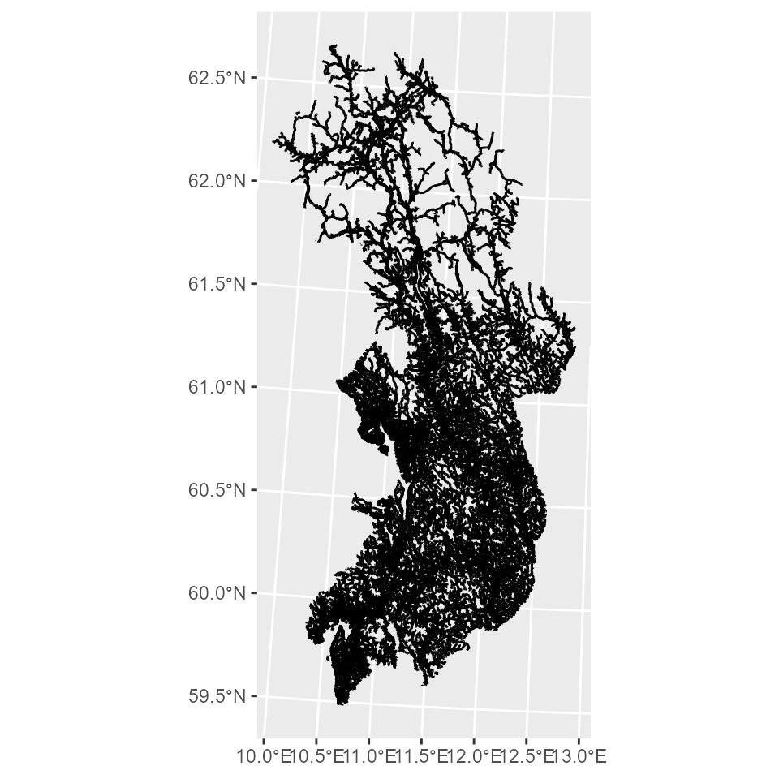

GISSB - Network analysis in R
Sindre Mikael Haugen
2022-09-01
GISSB_vignette.RmdGISSB er en pakke som inneholder GIS-funksjoner i R. I
denne vignetten demonstreres det hvordan GISSB kan brukes til å
gjennomføre nettverksanalyser i R.
Pakken inneholder følgende funksjoner:
address_to_coordscoords_to_googlevegnett_to_Rcoords_to_nodeshortest_path_igraphpath_leafletshortest_path_cppRouting
Se Avstand til fødested for et eksempel der denne pakken har blitt brukt i et produksjonsløp.
Adresse til koordinater (address_to_coords)
Funksjonen address_to_coords bruker Kartverkets adresse-API
for å finne koordinater til adresser. Denne API-en krever nettilgang og
baserer seg på matrikkelen (som er Norges offisielle eiendomsregister og
inneholder alle offisielle adresser og tilhørende koordinater). Ved å
skrive inn et postnummer med tilhørende adresse (med adressenummer hvis
tilgjengelig) returneres et sf-objekt
med koordinatene til denne adressen.
Standardverdi for projeksjonen av koordinatene er satt til CRS 25833. Dette er det offisielle koordinatsystemet i Norge og brukes i de fleste norske kartfiler.
fra <- GISSB::address_to_coords(zip_code = "0177",
address = "Akersveien 26")
fra
#> Simple feature collection with 1 feature and 5 fields
#> Geometry type: POINT
#> Dimension: XY
#> Bounding box: xmin: 262320 ymin: 6650367 xmax: 262320 ymax: 6650367
#> Projected CRS: ETRS89 / UTM zone 33N
#> address zip_code kommunenummer kommunenavn ID geometry
#> 0177 Akersveien 26 0177 0301 OSLO 1 POINT (262320 6650367)
til <- GISSB::address_to_coords(zip_code = "2211",
address = "Otervegen 23")
til
#> Simple feature collection with 1 feature and 5 fields
#> Geometry type: POINT
#> Dimension: XY
#> Bounding box: xmin: 334492 ymin: 6674510 xmax: 334492 ymax: 6674510
#> Projected CRS: ETRS89 / UTM zone 33N
#> address zip_code kommunenummer kommunenavn ID geometry
#> 2211 Otervegen 23 2211 3401 KONGSVINGER 1 POINT (334492 6674510)Det er også mulig å benytte CRS 4326 for å plassere koordinatene på kart med åpen kildekode (som f.eks. Leaflet) eller enklere søke opp koordinater i Google Maps. Koordinatsystemet CRS 4326 er derimot ikke metrisk og man kan derfor ikke måle avstander i meter når man bruker dette. Derfor anbefales det kun å bruke CRS 4326 i forbindelse med visualisering.
For å få koordinatene med CRS 4326 må dette spesifiseres i funksjonen
address_to_coords. Det er også mulig å angi en vektor med
flere postnummere og adresser for å få koordinatene til flere
adresser:
postnummere = c("0177", "2211")
adresser = c("Akersveien 26", "Otervegen 23")
fra_4326 <- GISSB::address_to_coords(zip_code = postnummere,
address = adresser,
crs_out = 4326)
fra_4326
#> Simple feature collection with 2 features and 5 fields
#> Geometry type: POINT
#> Dimension: XY
#> Bounding box: xmin: 10.74685 ymin: 59.92203 xmax: 12.01638 ymax: 60.17383
#> Geodetic CRS: WGS 84
#> address zip_code kommunenummer kommunenavn ID
#> 0177 Akersveien 26 0177 0301 OSLO 1
#> 2211 Otervegen 23 2211 3401 KONGSVINGER 2
#> geometry
#> 0177 POINT (10.74685 59.92203)
#> 2211 POINT (12.01638 60.17383)Man kan dermed plassere koordinatene på kartet, her med pakken Leaflet:
leaflet::leaflet() %>%
leaflet::addTiles() %>%
leaflet::addMarkers(data = fra_4326$geometry)Koordinater til å søke opp i Google Maps (coords_to_google)
Når man skal kombinere ulike datakilder er det viktig at alle filene
er angitt med samme koordinatsystem. Om man ønsker å beholde sf-objektet
med CRS 25833, men ønsker å legge til en kolonne med koordinatene i CRS
4326 (som er enklere å klippe og lime inn i Google Maps) kan man bruke
funksjonen coords_to_google. Da legges det til en kolonne
som heter coords_google.
fra <- GISSB::coords_to_google(fra)
fra$coords_google
#> [1] "59.9220274187717, 10.7468516818247"
til <- GISSB::coords_to_google(til)
til$coords_google
#> [1] "60.1738313973094, 12.0163762410388"Databehandling av vegnettet (vegnett_to_R)
For å beregne kjøreavstand mellom ulike koordinater benyttes vegnettet fra Nasjonal vegdatabank (NVDB). Dette har blitt gjort tilgjenglig på Q- og X-disken av GIS-ressurssenter. Når man laster inn vegnettverksfilen som et sf-objekt ser den slik ut (her begrenset til å kun gjelde for Oslo, Akershus og Hedmark):
ggplot() +
ggplot2::geom_sf(data = vegnett)
For at vegnettet skal kunne brukes til nettverksanalyser i R må
formatet omgjøres (med pakkene igraph og cppRouting).
Funksjonen vegnett_to_R kan brukes til dette formålet.
Resultatet er en liste med følgende objekter:
- [1] graph (tbl_graph)
- [2] nodes (sf)
- [3] edges (data.frame)
- [4] graph_cppRouting_FT_MINUTES (cppRouting)
- [5] graph_cppRouting_LENGTH (cppRouting)
nodes og edges benyttes for å plassere
koordinatene til sitt nærmeste punkt i vegnettet med funksjonen
coords_to_node.
graph benyttes for å beregne korteste kjøretid/-vei i
meter eller minutter med funksjonen beregne avstand. Denne
benyttes også for å vise hvilke noder i hvilken rekkefølge som utgjør
den korteste kjøreavstanden.
graph_cppRouting_FT_MINUTES benyttes for å beregne
korteste kjøretid i minutter med funksjonen
shortest_path_cppRouting.
graph_cppRouting_LENGTH benyttes for å beregne korteste
kjøreavstand i meter.
vegnett_list <- GISSB::vegnett_to_R(vegnett = vegnett)
graph <- vegnett_list[[1]]
nodes <- vegnett_list[[2]]
edges <- vegnett_list[[3]]
graph_cppRouting_FT_MINUTES <- vegnett_list[[4]]
graph_cppRouting_LENGTH <- vegnett_list[[5]]Vegnettet består av punkter som er plassert ca. 50 meter fra hverandre. Disse punktene kalles for noder. Lenkene som forbinder punktene sammen heter edges. For en mer detaljert gjennomgang av struktren til vegnettet og hvordan dette blir behandlet, se her.
Knytter koordinater til vegnettet (coords_to_node)
For å kunne beregne kjøretid-/vei fra et valgt start- og stoppunkt (uten å vite hvilken node-ID disse har) må man knytte adressene til deres nærmeste punkt i vegnettet. Dette gjøres ved å finne hvilken node som er den nærmeste et gitt koordinatpunkt (X og Y). Ved å bruke funksjonen knn fra pakken nabor finner man det nærmeste punktet i meter (målt i luftlinje). knn = 1 betyr at man kun er interessert i det nærmeste punktet og dette er satt som default. Dersom denne settes til et annet tall (gjøres ved å legge til argumentet knn = X i funksjonen) får man det nærmeste, nest nærmeste, tredje nærmeste punktet osv. Dette kan være nyttig dersom det nærmeste punktet i vegnettet ikke finner en gyldig rute pga. enveiskjørte veier eller andre brudd i vegnettet.
I funksjonen coords_to_node legger man inn et sf-objekt
med koordinatene til ett eller flere punkter. Resultatet er et objekt
(data.frame) der node-ID-en til den nærmeste noden til koordinatene målt
i luftlinje har blitt lagt til (from_node/to_node). I tillegg viser
kolonnen avstand_koord_node_from/avstand_koord_node_to hvor mange meter
det er i luftlinje mellom koordinatene og det nærmeste punktet i
vegnettverket. Dette kan være nyttig for å avgjøre om det er enkelte
punkter/koordinater som har tildelt noder som er for langt fra
hverandre.
For å kjøre koden må objektene nodes og edges (som lages med
funksjonen vegnett_to_R) være lastet inn.
from_node <- GISSB::coords_to_node(coords = fra, direction = "from")
from_node
#> from_nodeID membership_from_node coords_google_from_node
#> 26956 26956 1 59.9218595345493, 10.7466025807057
#> knn_from_node ID dist_coord_node_from
#> 26956 1 1 23.3298
to_node <- GISSB::coords_to_node(coords = til, direction = "to")
to_node
#> to_nodeID membership coords_google_to_node knn ID
#> 210373 210373 1 60.1729945919562, 12.0157389790561 1 1
#> dist_coord_node_to
#> 210373 99.71126Vegnettet består av flere mindre vegnett der flere ikke har noen tilknytning til hverandre. Dersom man har et startpunkt som tilhører en annen del av vegnettet enn stoppunktet vil det ikke være mulig å finne en gyldig rute mellom disse. Se mer om dette under “Ett eller flere separate vegnett?” her. Man legger til argumentet membership = TRUE for å begrense listen over hvilke noder man leter etter til å kun gjelde noder som er tilknyttet samme vegnett som enten start- eller stoppnoden. Dette kan bare gjøres for enten “fra” eller “til” og koden som har membership = FALSE må kjøres før koden som har membership = TRUE:
from_node <- GISSB::coords_to_node(coords = fra, direction = "from", membership = F)
from_node
#> from_nodeID membership_from_node coords_google_from_node
#> 26956 26956 1 59.9218595345493, 10.7466025807057
#> knn_from_node ID dist_coord_node_from
#> 26956 1 1 23.3298
to_node <- GISSB::coords_to_node(coords = til, direction = "to", membership = T)
to_node
#> to_nodeID membership coords_google_to_node knn ID
#> 196387 210373 1 60.1729945919562, 12.0157389790561 1 1
#> dist_coord_node_to
#> 196387 99.71126Beregner kjøreavstand med tidygraph (shortest_path_igraph)
Når man har en node-ID for både start- og stoppunkt kan man benytte
funksjonen shortest_path_igraph for å beregne den korteste
kjøreavstanden mellom disse. For å beregne korteste kjøreavstand i
minutter setter man enhet = “FT_MINUTES” (default), mens enhet =
“LENGTH” beregner korteste kjøreavstand i meter.
For å kjøre koden må objektet graph (som lages med funksjonen
vegnett_to_R) være lastet inn.
OBS: shortest_path_igraph fungerer ikke med vektorer,
dvs. liste over flere fra- eller tilnoder. Det er kun mulig å beregne
avstander én til én. For å beregne avstand med flere fra- og/eller
tilnoder, se shortest_path_cppRouting.
avstand_min <- GISSB::shortest_path_igraph(from_node_ID = from_node$from_node,
to_node_ID = to_node$to_node,
unit = "FT_MINUTES",
path = F)
paste0(round(avstand_min$length, digits = 1), " minutter / ",
substr(avstand_min$length/60, 1, 1),
" timer og ",
round(avstand_min$length, digits = 0)-as.numeric(substr(avstand_min$length/60, 1, 1))*60, " minutter")
#> [1] "85.9 minutter / 1 timer og 26 minutter"
avstand_meter <- GISSB::shortest_path_igraph(from_node_ID = from_node$from_node,
to_node_ID = to_node$to_node,
unit = "LENGTH",
path = F)
paste0(round(avstand_meter$length, digits = 1), " meter / ",
round(avstand_meter$length/1000, digits = 1), " km."
)
#> [1] "94643.9 meter / 94.6 km."Dersom man ønsker å få oppgitt hvilke noder i hvilken rekkefølge som utgjør den korteste ruten mellom start- og stoppunktet setter man argumentet path = TRUE.
path <- GISSB::shortest_path_igraph(from_node_ID = from_node$from_node,
to_node_ID = to_node$to_node,
unit = "FT_MINUTES",
path = T)
path$epath
#> [[1]]
#> + 544/618187 edges from 8b70652:
#> [1] 26956-> 27096 27096-> 87438 87438->189224 189224->189225 189225->227673
#> [6] 227673->230389 230389->242076 242076-> 99120 99120-> 99117 99117->242077
#> [11] 242077->242078 242078->224933 224933->100660 100660->224934 224934->288314
#> [16] 288314->288316 288316->226476 226476->226477 226477->226478 226478->226479
#> [21] 226479->226480 226480->226481 226481->226482 226482-> 99588 99588->226483
#> [26] 226483->225276 225276->225275 225275->226335 226335->226336 226336->226337
#> [31] 226337->226338 226338->226339 226339->226340 226340->226341 226341->226342
#> [36] 226342->226343 226343->226344 226344->294435 294435->293148 293148->296809
#> [41] 296809->296808 296808->296807 296807->296806 296806->296805 296805->224450
#> [46] 224450->100181 100181->224635 224635->296804 296804->293675 293675->293676
#> + ... omitted several edgesDet er mulig å visualisere denne ruten (path) ved å bruke funksjonen
path_leaflet:
GISSB::path_leaflet(path)Beregner kjøreavstand med cppRouting (shortest_path_cppRouting)
Det er mulig å bruke funksjonen shortest_path_igraph til
å beregne kjøretid/-vei, men dette kan ta veldig lang tid dersom man
skal beregne kjøreavstanden mellom mange koordinater. Derfor er det best
å heller bruke funksjonen shortest_path_cppRouting. Denne
funksjonen bruker pakken cppRouting
som benytter et annet format på dataene som krever mindre minne og
benytter parallellprosessering, noe som gjør at kjøringer går mye
raskere. I tillegg lagres ikke informasjonen om selve ruten, kun
avstanden i minutter eller meter. Dette er en fordel mtp. på tiden det
tar å kjøre koden, men ulempen er at man ikke får sjekket hvilke
veglenker hver rute består av. Dette kan derfor funksjonen
shortest_path_igraph (med path = TRUE) brukes til.
I funksjonen shortest_path_cppRouting kan man legge inn
vektorer med flere noder i både argumentene “from_node” og “to_node.”
Det betyr at dersom man legger inn 2 noder i “from_node” og 4 noder i
“to_node” beregnes den korteste kjøreavstanden fra begge startnodene til
alle de fire stoppnodene. Resultatet blir et objekt med 8 rader. Om man
kun er interessert i den korteste kjøreavstanden fra hver av startnodene
til én av stoppnodene legger man inn arumentet dist = “min i funksjonen.
Om man derimot vil ha hvilken av stoppnodene som har lengst kjøreavstand
per startnode settes dist =”max”.
For å beregne korteste kjøretid i minutter med
shortest_path_cppRouting settes graph_cppRouting =
graph_cppRouting_FT_MINUTES, mens graph_cppRouting =
graph_cppRouting_LENGTH beregner korteste kjøreavstand i meter.
Objektet/objektene graph_cppRouting_FT_MINUTES/graph_cppRouting_LENGTH
må være lastet inn (gjøres med funksjonen vegnett_to_R) før
shortest_path_cppRouting kan kjøres.
avstand_cpp_min <- GISSB::shortest_path_cppRouting(from_node$from_node,
to_node$to_node,
unit = "FT_MINUTES")
avstand_cpp_min
#> from_node to_node length
#> 1 26956 210373 85.92498
avstand_cpp_meter <- GISSB::shortest_path_cppRouting(from_node$from_node,
to_node$to_node,
unit = "LENGTH")
avstand_cpp_meter
#> from_node to_node length
#> 1 26956 210373 94643.92Eksempel
I dette eksempelet…
adresser <- c("Sykehusveien 25",
"Sognsvannsveien 20",
"Kirkeveien 166",
"Parkvegen 35",
"Kirkevegen 31",
"Sjukehusveien 9",
"Sogneprest Munthe-Kaas vei 100")
postnummere <- c("1474",
"0372",
"0450",
"2212",
"2413",
"2500",
"1346")
til <- GISSB::address_to_coords(zip_code = postnummere,
address = adresser) %>%
GISSB::coords_to_google()
to_node <- GISSB::coords_to_node(coords = til, direction = "to", membership = F)
fra <- GISSB::address_to_coords(zip_code = c("0177", "2211"),
address = c("Akersveien 26", "Otervegen 23")) %>%
GISSB::coords_to_google()
from_node <- GISSB::coords_to_node(coords = fra, direction = "from", membership = T)
avstand_cpp <- GISSB::shortest_path_cppRouting(unique(from_node$from_node),
unique(to_node$to_node),
unit = "FT_MINUTES")
avstand_cpp
#> from_node to_node length
#> 1 26956 39305 18.754156
#> 2 210373 39305 75.981193
#> 3 26956 239705 10.219728
#> 4 210373 239705 86.401119
#> 5 26956 26943 5.109693
#> 6 210373 26943 85.498371
#> 7 26956 41093 82.570851
#> 8 210373 41093 6.076977
#> 9 26956 221362 106.664615
#> 10 210373 221362 95.472454
#> 11 26956 204669 271.642083
#> 12 210373 204669 268.844262
#> 13 26956 174136 19.048534
#> 14 210373 174136 99.296427
avstand_cpp_min <- GISSB::shortest_path_cppRouting(unique(from_node$from_node),
unique(to_node$to_node),
unit = "FT_MINUTES",
dist = "min")
avstand_cpp_min
#> # A tibble: 2 x 3
#> # Groups: from_node [2]
#> from_node to_node length
#> <int> <int> <dbl>
#> 1 210373 41093 6.08
#> 2 26956 26943 5.11
avstand_cpp_max <- GISSB::shortest_path_cppRouting(unique(from_node$from_node),
unique(to_node$to_node),
unit = "FT_MINUTES",
dist = "max")
avstand_cpp_max
#> # A tibble: 2 x 3
#> # Groups: from_node [2]
#> from_node to_node length
#> <int> <int> <dbl>
#> 1 210373 204669 269.
#> 2 26956 204669 272.